4 ArchR workflow and different weight methods
In this chapter, we illustrate the epiregulon workflow starting from an ArchR project and compare the different weight estimation methods.
The dataset consists of unpaired scATACseq/scRNAseq of parental LNCaP cells treated with DMSO, Enzalutamide and Enza resistant cells. The dataset was taken from Taavitsainen et al GSE168667 and GSE168668.
4.1 Data preparation
Please refer to the full ArchR manual for instructions
Before running Epiregulon, the following analyses need to be completed: 1. Obtain a peak matrix on scATACseq by using addGroupCoverages > addReproduciblePeakSet > addPeakMatrix. See chapter 10 from ArchR manual 2. RNA-seq integration. a. For unpaired scATAC-seq, use addGeneIntegrationMatrix. See chapter 8 from ArchR manual b. For multiome data, use addGeneExpressionMatrix. See multiome tutorial 3. Perform dimensionality reduction from with either single modalities or joint scRNAseq and scATACseq using addCombinedDims
4.2 Load ArchR project
library(ArchR)
archR_project_path <- "/gstore/project/lineage/prostate/GSE168667/OUTPUT/multiome/"
proj <- loadArchRProject(path = archR_project_path, showLogo = FALSE)We verify that “GeneExpressionMatrix” and “PeakMatrix” are present for this tutorial.
getAvailableMatrices(proj)## [1] "GeneIntegrationMatrix" "GeneScoreMatrix" "MotifMatrix"
## [4] "PeakMatrix" "TileMatrix"We will use the joint reducedDims - “LSI_Combined” and joint embeddings - “UMAP_Combined”
head(getReducedDims(proj, reducedDims = "iLSI_Combined")[,1:5])## LSI1 LSI2 LSI3 LSI4
## SRR13927735#TTATGTCTCCAGGTAT-1 -2.713935 -0.3677949 -0.4484238 -0.30645138
## SRR13927735#TATTGCTCATCAGAAA-1 -2.642781 -0.2767556 -0.9142714 -0.19675812
## SRR13927735#TTCGATTGTAGGGTTG-1 -2.322865 -0.1543080 -1.4106049 -0.08891276
## SRR13927735#CATTCATTCGGATGTT-1 -2.572976 -0.1917188 -1.0464294 -0.12660121
## SRR13927735#ACGTTAGGTCAACTGT-1 -2.478552 -0.1776639 -1.1037295 -0.22976613
## SRR13927735#AAATGCCCAGCAATGG-1 -2.595352 -0.3803464 -0.7770309 -0.52431765
## LSI5
## SRR13927735#TTATGTCTCCAGGTAT-1 -0.046845365
## SRR13927735#TATTGCTCATCAGAAA-1 0.075746940
## SRR13927735#TTCGATTGTAGGGTTG-1 0.019873276
## SRR13927735#CATTCATTCGGATGTT-1 0.009947438
## SRR13927735#ACGTTAGGTCAACTGT-1 -0.150097539
## SRR13927735#AAATGCCCAGCAATGG-1 -0.243074591head(getEmbedding(proj, embedding = "UMAP_Combined"))## iLSI_Combined#UMAP_Dimension_1
## SRR13927735#TTATGTCTCCAGGTAT-1 -9.622903
## SRR13927735#TATTGCTCATCAGAAA-1 -9.360211
## SRR13927735#TTCGATTGTAGGGTTG-1 -8.617347
## SRR13927735#CATTCATTCGGATGTT-1 -9.285448
## SRR13927735#ACGTTAGGTCAACTGT-1 -8.809260
## SRR13927735#AAATGCCCAGCAATGG-1 -9.261216
## iLSI_Combined#UMAP_Dimension_2
## SRR13927735#TTATGTCTCCAGGTAT-1 -0.2908237
## SRR13927735#TATTGCTCATCAGAAA-1 -0.2892935
## SRR13927735#TTCGATTGTAGGGTTG-1 -0.2154103
## SRR13927735#CATTCATTCGGATGTT-1 -0.3267481
## SRR13927735#ACGTTAGGTCAACTGT-1 -0.2168703
## SRR13927735#AAATGCCCAGCAATGG-1 0.32003564.3 Retrieve matrices from ArchR project
Retrieve gene expression and peak matrix from the ArchR project
GeneExpressionMatrix <- getMatrixFromProject(
ArchRProj = proj,
useMatrix = "GeneIntegrationMatrix",
useSeqnames = NULL,
verbose = TRUE,
binarize = FALSE,
threads = 1,
logFile = "x"
)## 2023-11-20 06:04:29.457666 : Organizing colData, 1.393 mins elapsed.## 2023-11-20 06:04:29.616974 : Organizing rowData, 1.396 mins elapsed.## 2023-11-20 06:04:29.620888 : Organizing rowRanges, 1.396 mins elapsed.## 2023-11-20 06:04:29.62639 : Organizing Assays (1 of 1), 1.396 mins elapsed.## 2023-11-20 06:04:36.791312 : Constructing SummarizedExperiment, 1.515 mins elapsed.## 2023-11-20 06:04:39.38529 : Finished Matrix Creation, 1.559 mins elapsed.PeakMatrix <- getMatrixFromProject(
ArchRProj = proj,
useMatrix = "PeakMatrix",
useSeqnames = NULL,
verbose = TRUE,
binarize = FALSE,
threads = 1,
logFile = "x"
)## 2023-11-20 06:05:28.976756 : Organizing colData, 0.826 mins elapsed.## 2023-11-20 06:05:29.123924 : Organizing rowData, 0.829 mins elapsed.## 2023-11-20 06:05:29.132994 : Organizing rowRanges, 0.829 mins elapsed.## 2023-11-20 06:05:29.144588 : Organizing Assays (1 of 1), 0.829 mins elapsed.## 2023-11-20 06:05:31.818069 : Constructing SummarizedExperiment, 0.874 mins elapsed.## 2023-11-20 06:05:53.435194 : Finished Matrix Creation, 1.234 mins elapsed.If we extract the gene expression from matrix, it will be in the form of RangedSummarizedExperiment. We can make use of ArchRMatrix2SCE to convert gene expression matrix to SingleCellExperiment object. It’s also important to note that gene expression from ArchR is library size normalized (not logged)
library(epiregulon.archr)##
## Attaching package: 'epiregulon.archr'## The following objects are masked from 'package:epiregulon':
##
## addMotifScore, addTFMotifInfo, calculateP2G, getTFMotifInfoGeneExpressionMatrix <- ArchRMatrix2SCE(GeneExpressionMatrix)
rownames(GeneExpressionMatrix) <- rowData(GeneExpressionMatrix)$nameWe rename the assay name of the PeakMatrix as counts
assayNames(PeakMatrix) <- "counts"Transfer embeddings from ArchR project to singleCellExperiment for visualization
reducedDim(GeneExpressionMatrix, "UMAP_Combined") <- getEmbedding(ArchRProj = proj,
embedding = "UMAP_Combined",
returnDF = TRUE)[colnames(GeneExpressionMatrix),]
# add cell label
GeneExpressionMatrix$label <- GeneExpressionMatrix$Cells
GeneExpressionMatrix$label[GeneExpressionMatrix$Treatment == "enzalutamide 48h"] <- "LNCaP–ENZ48"
GeneExpressionMatrix$label <- factor(GeneExpressionMatrix$label,
levels = c("LNCaP", "LNCaP–ENZ48", "LNCaP RES-A", "LNCaP RES-B"))Visualize singleCellExperiment by UMAP
scater::plotReducedDim(GeneExpressionMatrix,
dimred = "UMAP_Combined",
text_by = "label",
colour_by = "label")
4.4 Retrieve bulk TF ChIP-seq binding sites
First, we retrieve the information of TF binding sites collected from Cistrome and ENCODE ChIP-seq. Currently, human genomes HG19 and HG38 and mouse mm10 are available.
grl <- getTFMotifInfo(genome = "hg38")## see ?scMultiome and browseVignettes('scMultiome') for documentation## loading from cachegrl## GRangesList object of length 1558:
## $`5-hmC`
## GRanges object with 24048 ranges and 0 metadata columns:
## seqnames ranges strand
## <Rle> <IRanges> <Rle>
## [1] chr1 10000-10685 *
## [2] chr1 13362-13694 *
## [3] chr1 29631-29989 *
## [4] chr1 40454-40754 *
## [5] chr1 135395-135871 *
## ... ... ... ...
## [24044] chrY 56864377-56864627 *
## [24045] chrY 56876124-56876182 *
## [24046] chrM 84-2450 *
## [24047] chrM 13613-14955 *
## [24048] chrM 15134-16490 *
## -------
## seqinfo: 25 sequences from an unspecified genome; no seqlengths
##
## ...
## <1557 more elements>4.5 Link ATAC-seq peaks to target genes
Next, we compute peak to gene correlations using the addPeak2GeneLinks function from the ArchR package. The user would need
to supply a path to an ArchR project already containing peak and gene matrices, as well as Latent semantic indexing (LSI) dimensionality reduction.
# path to ArchR project
p2g <- calculateP2G(ArchR_path = archR_project_path,
useDim = "iLSI_Combined",
useMatrix = "GeneIntegrationMatrix",
threads = 1)## Setting ArchRLogging = FALSE## Using ArchR to compute peak to gene links...## 2023-11-20 06:06:12.534937 : Getting Available Matrices, 0 mins elapsed.## 2023-11-20 06:06:13.310096 : Filtered Low Prediction Score Cells (0 of 15522, 0), 0.002 mins elapsed.## 2023-11-20 06:06:13.907943 : Computing KNN, 0.012 mins elapsed.## 2023-11-20 06:06:16.322502 : Identifying Non-Overlapping KNN pairs, 0.053 mins elapsed.## 2023-11-20 06:06:19.215716 : Identified 497 Groupings!, 0.101 mins elapsed.## 2023-11-20 06:06:19.290412 : Getting Group RNA Matrix, 0.102 mins elapsed.## 2023-11-20 06:09:01.176813 : Getting Group ATAC Matrix, 2.8 mins elapsed.## 2023-11-20 06:11:35.076535 : Normalizing Group Matrices, 5.365 mins elapsed.## 2023-11-20 06:11:43.552208 : Finding Peak Gene Pairings, 5.507 mins elapsed.## 2023-11-20 06:11:44.099465 : Computing Correlations, 5.516 mins elapsed.## 2023-11-20 06:11:52.759379 : Completed Peak2Gene Correlations!, 5.66 mins elapsed.p2g## DataFrame with 16883 rows and 8 columns
## idxATAC chr start end idxRNA target
## <integer> <factor> <integer> <integer> <integer> <character>
## 1 15 chr1 912762 913262 7 NOC2L
## 2 25 chr1 920261 920761 7 NOC2L
## 3 25 chr1 920261 920761 8 KLHL17
## 4 32 chr1 927728 928228 7 NOC2L
## 5 32 chr1 927728 928228 8 KLHL17
## ... ... ... ... ... ... ...
## 16879 210643 chrX 154542721 154543221 23496 CH17-340M24.3
## 16880 210643 chrX 154542721 154543221 23501 LAGE3
## 16881 210643 chrX 154542721 154543221 23506 IKBKG
## 16882 210643 chrX 154542721 154543221 23509 DKC1
## 16883 210665 chrX 154815200 154815700 23515 F8
## Correlation distance
## <numeric> <numeric>
## 1 0.543478 46297
## 2 0.602633 38798
## 3 0.597510 40076
## 4 0.660584 31331
## 5 0.532240 32609
## ... ... ...
## 16879 0.540888 114492
## 16880 0.708942 63714
## 16881 0.517261 1716
## 16882 0.557412 219771
## 16883 0.554537 2114904.6 Add TF motif binding to peaks
The next step is to add the TF motif binding information by overlapping the regions of the peak matrix with the bulk chip-seq database. The user can supply an archR project path and this function will retrieve the peak matrix, or a peakMatrix in the form of a Granges object or RangedSummarizedExperiment.
overlap <- addTFMotifInfo(archR_project_path = archR_project_path, grl = grl, p2g = p2g)## Successfully loaded ArchRProject!## Computing overlap...## Success!4.7 Generate regulons
A long format data frame, representing the inferred regulons, is then generated. The data frame consists of three columns:
- tf (transcription factor)
- target gene
- peak to gene correlation between tf and target gene
regulon <- getRegulon(p2g = p2g, overlap = overlap, aggregate = FALSE)
regulon## DataFrame with 2622030 rows and 10 columns
## idxATAC chr start end idxRNA target corr
## <integer> <factor> <integer> <integer> <integer> <character> <matrix>
## 1 15 chr1 912762 913262 7 NOC2L
## 2 15 chr1 912762 913262 7 NOC2L
## 3 15 chr1 912762 913262 7 NOC2L
## 4 15 chr1 912762 913262 7 NOC2L
## 5 15 chr1 912762 913262 7 NOC2L
## ... ... ... ... ... ... ... ...
## 2622026 210665 chrX 154815200 154815700 23515 F8
## 2622027 210665 chrX 154815200 154815700 23515 F8
## 2622028 210665 chrX 154815200 154815700 23515 F8
## 2622029 210665 chrX 154815200 154815700 23515 F8
## 2622030 210665 chrX 154815200 154815700 23515 F8
## distance idxTF tf
## <numeric> <integer> <character>
## 1 46297 10 AGO1
## 2 46297 22 AML1-ETO
## 3 46297 32 ARID4A
## 4 46297 33 ARID4B
## 5 46297 34 ARID5B
## ... ... ... ...
## 2622026 211490 1214 ZBTB8A
## 2622027 211490 1366 ZNF395
## 2622028 211490 1443 ZNF589
## 2622029 211490 1444 ZNF592
## 2622030 211490 1463 ZNF6394.8 (Optional) Annotate with TF motifs
So far the gene regulatory network was constructed from TF ChIP-seq exclusively. Some users would prefer to further annotate the regulatory elements with the presence of motifs. If motif annotation has been previously performed by ArchR, addMotifScore can retrieve this annotation from the ArchR project.
If motifs are available for a factor and the RE contains a motif, we return 1. If motifs are available and the RE does not contain a motif, we return 0. If no motifs are known for this particular factor (as in the case of co-factors or chromatin modifiers), we return NA.
If the user has not performed motif annotation with ArchR, we can also annotate the peaks with motifs using the Cisbp database (default) or user-provided PWMS. See ?addMotifScore
It is important to note that filtering for the presence of motifs removes a large fraction of the target genes. Motifs are often present in a small subset of the ChIP-seq peaks (can be as low as 10%). Second, indirect TF binding, possibly through its interaction partners, may have a true biological function. In this example, we continue with regulons containing the motifs, regulon.motif. However, if the user prefers to retain all target genes including REs without the TFs, they should proceed with regulon.
regulon.motif <- addMotifScore(regulon = regulon, ArchProj = proj )## retrieving motif information from ArchR project# retain only TF-RE-TG triplets with motifs
regulon.motif <- regulon.motif[which(regulon.motif$motif ==1),]4.9 Prune network
Epiregulon prunes the network by performing tests of independence on the observed number of cells jointly expressing transcription factor (TF), regulatory element (RE) and target gene (TG) vs the expected number of cells if TF/RE and TG are independently expressed. We implement two tests, the binomial test and the chi-square test. In the binomial test, the expected probability is P(TF, RE) * P(TG), and the number of trials is the total number of cells, and the observed successes is the number of cells jointly expressing all three elements. In the chi-square test, the expected probability for having all 3 elements active is also P(TF, RE) * P(TG) and the probability otherwise is 1- P(TF, RE) * P(TG). The observed cell count for the active category is the number of cells jointly expressing all three elements, and the cell count for the inactive category is n - n_triple.
We calculate cluster-specific p-values if users supply cluster labels. This is useful if we are interested in cluster-specific networks. The pruned regulons can then be used to visualize differential networks for transcription factors of interest. See section on differential networks.
4.10 Add Weights
While the `pruneRegulon’ function provides statistics on the joint occurrence of TF-RE-TG, we would like to further estimate the strength of regulation. Biologically, this can be interpreted as the magnitude of gene expression changes induced by transcription factor activity. Epiregulon estimates the regulatory potential using one of the three measures: 1) correlation between TG and TF or between TG and the product of TF and RE, 2) mutual information between TG and TF expression or between TG and the product of TF and RE, or 3) Wilcoxon test statistics of target gene expression in cells jointly expressing all 3 elements vs cells that do not.
Two measures (correlation and Wilcoxon) give both the magnitude and directionality of changes whereas mutational information is always positive. The correlation and mutual information statistics are computed on grouped pseudobulks by user-supplied cluster labels and yield a single weight across all clusters per each TF-RE-target triplet. In contrast, the Wilcoxon method group cells based on the joint expression of TF, RE and TG in each single cell or in cell aggregates. If cell labels are provided, we calculate cluster-specific weights in addition to estimating weights from all the cells. Cell aggregation uses a default value of 10 cells and can help overcome sparsity and speed up computation. If cluster labels are provided, we can obtain weights of individual clusters and all cells combined.
In the case of drug treatment, however, the activity of TF is suppressed often not by downregulation of the TF gene expression, but by direct interference of the TF protein function. In this dataset, the drug enzalutamide blocks the ligand binding domain of the androgen receptor and prevents it from binding to the chromatin. As a result, while the AR gene expression stays the same, the chromatin accessibility of AR, as computed by chromVar in the ArchR package, is greatly reduced by 48 hour treatment of enzalutamide.
First, we visualize the AR expression and show that enzalutamide does not decrease AR expression.
library(epiregulon.extra)
plotActivityDim(sce = GeneExpressionMatrix,
activity_matrix = assay(GeneExpressionMatrix),
tf = "AR",
dimtype = "UMAP_Combined",
label = "label",
point_size = 1,
legend.label = "gene expression")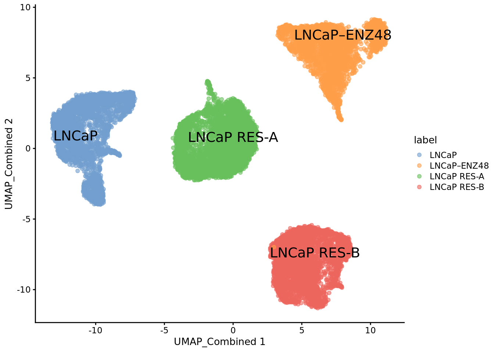
Then we extract the chromVarMatrix from ArchR project and then visualize the chromatin accessibility at AR bound sites. We can see that 48 hour of enzalutamide treatment reduced chromatin accessibility at AR bound sites
chromVarMatrix <- getMatrixFromProject(
ArchRProj = proj,
useMatrix = "MotifMatrix",
useSeqnames = NULL,
verbose = TRUE,
binarize = FALSE,
threads = 1
)## 2023-11-20 06:13:53.150448 : Organizing colData, 0.188 mins elapsed.## 2023-11-20 06:13:53.288604 : Organizing rowData, 0.19 mins elapsed.## 2023-11-20 06:13:53.29126 : Organizing rowRanges, 0.19 mins elapsed.## 2023-11-20 06:13:53.295612 : Organizing Assays (1 of 2), 0.19 mins elapsed.## 2023-11-20 06:13:53.402467 : Organizing Assays (2 of 2), 0.192 mins elapsed.## 2023-11-20 06:13:53.506574 : Constructing SummarizedExperiment, 0.194 mins elapsed.## 2023-11-20 06:13:56.333542 : Finished Matrix Creation, 0.241 mins elapsed.plotActivityDim(sce = GeneExpressionMatrix,
activity_matrix = assay(chromVarMatrix, "z"),
tf = "AR_689",
dimtype = "UMAP_Combined",
label = "label",
point_size = 1,
legend.label = "chromVar")
Next, we are going to compare 3 different weight methods. In the first method, the wilcoxon test compares target gene expression in cells meeting both the TF expression and accessibility cutoffs vs cells failing either the TF expression or/and accessibility cutoffs. Next, we try out the correlation method which comes in two flavors. When tf_re.merge = FALSE, weight is computed on the correlation of target gene expression vs TF gene expression. When tf_re.merge = TRUE, weight is computed on the correlation of target gene expression vs the product of TF expression and chromatin accessibility at TF-bound regulatory elements.
regulon.w.wilcox <- addWeights(regulon = pruned.regulon,
expMatrix = GeneExpressionMatrix,
exp_assay = "counts",
peakMatrix = PeakMatrix,
peak_assay = "counts",
clusters = GeneExpressionMatrix$label,
method = "wilcoxon")## adding weights using wilcoxon...regulon.w.corr <- addWeights(regulon = pruned.regulon,
expMatrix = GeneExpressionMatrix,
exp_assay = "counts",
peakMatrix = PeakMatrix,
peak_assay = "counts",
clusters = GeneExpressionMatrix$label,
method = "corr")## adding weights using corr...## calculating average expression across clusters...## computing weights...regulon.w.corr.re <- addWeights(regulon = pruned.regulon,
expMatrix = GeneExpressionMatrix,
exp_assay = "counts",
peakMatrix = PeakMatrix,
peak_assay = "counts",
clusters = GeneExpressionMatrix$label,
method = "corr",
tf_re.merge = TRUE)## adding weights using corr...## calculating average expression across clusters...## computing weights...4.11 Calculate TF activity
Finally, the activities for a specific TF in each cell are computed by averaging the weighted expressions of target genes linked to the TF. \[y=\frac{1}{n}\sum_{i=1}^{n} x_i * weight_i\] where \(y\) is the activity of a TF for a cell \(n\) is the total number of targets for a TF \(x_i\) is the log count expression of target i where i in {1,2,…,n} \(weight_i\) is the weight of TF and target i
We calculate three different activities corresponding to the different weighted regulons
score.combine.wilcox <- calculateActivity(expMatrix = GeneExpressionMatrix,
exp_assay = "counts",
regulon = regulon.w.wilcox,
normalize = TRUE,
mode = "weight",
method = "weightedMean")## calculating TF activity from regulon using weightedmean## Warning in calculateActivity(expMatrix = GeneExpressionMatrix, exp_assay =
## "counts", : The weight column contains multiple subcolumns but no cluster
## information was provided. Using first column to compute activity...## aggregating regulons...## creating weight matrix...## calculating activity scores...## normalize by mean...## normalize by the number of targets...score.combine.corr <- calculateActivity(expMatrix = GeneExpressionMatrix,
exp_assay = "counts",
regulon = regulon.w.corr,
normalize = TRUE,
mode = "weight",
method = "weightedMean")## calculating TF activity from regulon using weightedmean## aggregating regulons...## creating weight matrix...## calculating activity scores...## normalize by mean...## normalize by the number of targets...score.combine.corr.re <- calculateActivity(expMatrix = GeneExpressionMatrix,
exp_assay = "counts",
regulon = regulon.w.corr.re,
normalize = TRUE,
mode = "weight",
method = "weightedMean")## calculating TF activity from regulon using weightedmean## aggregating regulons...## creating weight matrix...## calculating activity scores...## normalize by mean...## normalize by the number of targets...We visualize the different activities side by side.
In this case, activity calculated from correlation based on TF and TG expression is clearly wrong because we see increased AR activity after Enzalutamide treatment despite it being an AR antagonist. Therefore, for drug treatment which often decouples TF gene expression and its activity, it is important to take into consideration both TF gene expression and RE chromatin accessibility; the latter may be a better indicator of TF function if the TF has an effect on the chromatin accessibility. In this case, the recommended methods are either wilcox or corr with tf_re.merge = TRUE.
The astute users could however detect a difference in the prediction of the AR activity in the resistant clones “RES-A” and “RES-B” with respect to the parental “LNCaP” between the two methods. For example, the corr with tf_re.merge = TRUE shows increased AR activity in “RES-B” compared to “LNCaP” because “RES-B” shows increased AR expression. In contrast, the wilcoxon method did not predict an increase in AR activity in “RES-B” because “RES-B” still shows reduced chromatin accessibility compared to “LNCaP”. Since wilcoxon takes into account the co-occurrence of both TF gene expression and RE chromatin accessibility, this method does not predict an overall increase in AR activity.
In the absence of the ground truth, it is difficult to judge which method is superior. Therefore, it is always crucial to validate key findings with additional empirical evidence. The most important disclaimer we wish to make is that all predictions by epiregulon should be robustly tested experimentally.
library(epiregulon.extra)
plotActivityViolin(activity_matrix = score.combine.wilcox,
tf = c( "AR"),
clusters = GeneExpressionMatrix$label) + ggtitle ("AR activity by wilcoxon")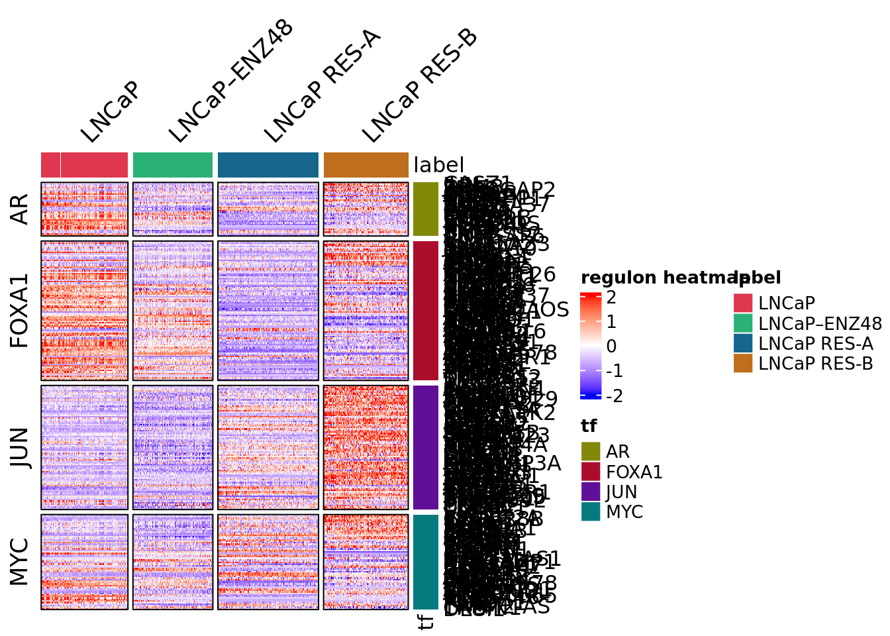
plotActivityViolin(activity_matrix = score.combine.corr,
tf = c( "AR"),
clusters = GeneExpressionMatrix$label) + ggtitle ("AR activity by corr TF vs TG")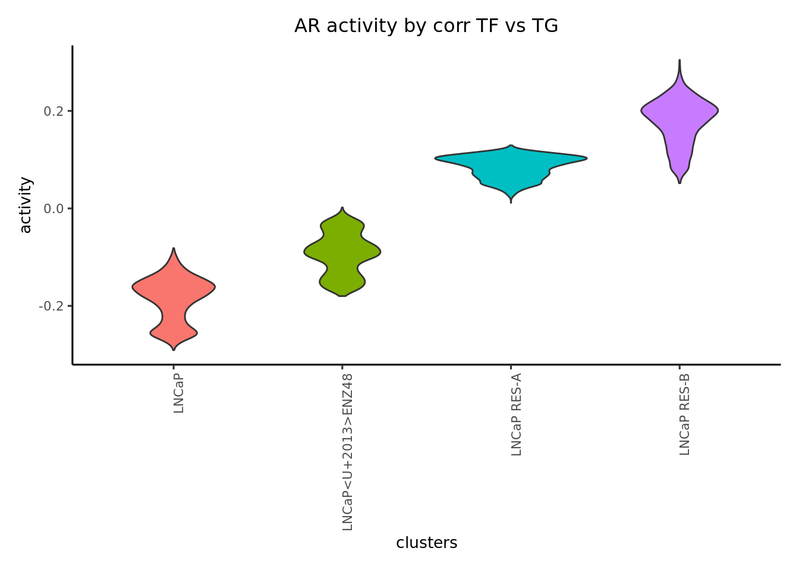
plotActivityViolin(activity_matrix = score.combine.corr.re,
tf = c( "AR"),
clusters = GeneExpressionMatrix$label) + ggtitle ("AR activity by corr TF*RE vs TG")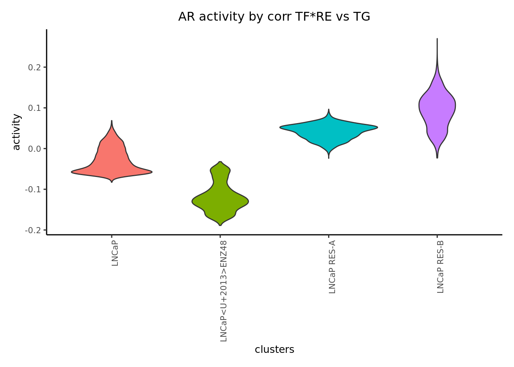
4.12 Perform differential activity
For the remaining steps, we continue with activity derived from the wilcoxon method.
markers <- findDifferentialActivity(activity_matrix = score.combine.wilcox,
clusters = GeneExpressionMatrix$label,
pval.type = "some",
direction = "up",
test.type = "t")Take the top differential TFs
markers.sig <- getSigGenes(markers, topgenes = 5 )## Using a logFC cutoff of 0 for class LNCaP## Using a logFC cutoff of 0 for class LNCaP<U+2013>ENZ48## Using a logFC cutoff of 0 for class LNCaP RES-A## Using a logFC cutoff of 0 for class LNCaP RES-B4.13 Visualize the results
First visualize the known differential TFs by bubble plot
plotBubble(activity_matrix = score.combine.wilcox,
tf = c("AR","FOXA1", "MYC","JUN"),
clusters = GeneExpressionMatrix$label)
Then visualize the most differential TFs by clusters
plotBubble(activity_matrix = score.combine.wilcox,
tf = markers.sig$tf,
clusters = GeneExpressionMatrix$label)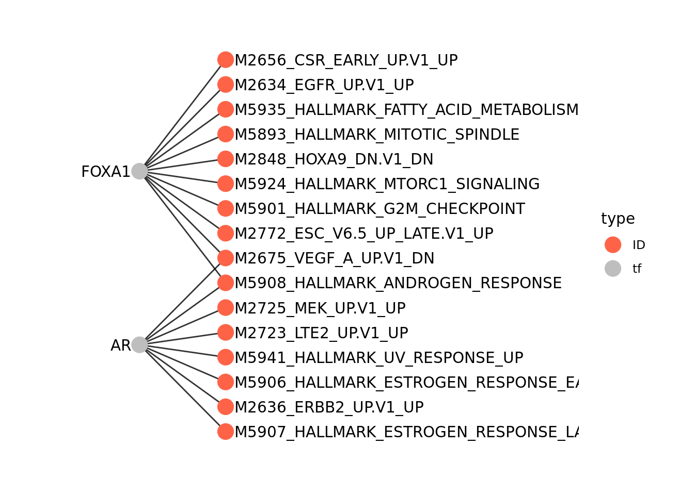
Visualize the known differential TFs by UMAP
plotActivityDim(sce = GeneExpressionMatrix,
activity_matrix = score.combine.wilcox,
tf = c( "AR", "FOXA1", "MYC", "JUN"),
dimtype = "UMAP_Combined",
label = "label",
point_size = 1,
ncol = 2,
nrow = 2)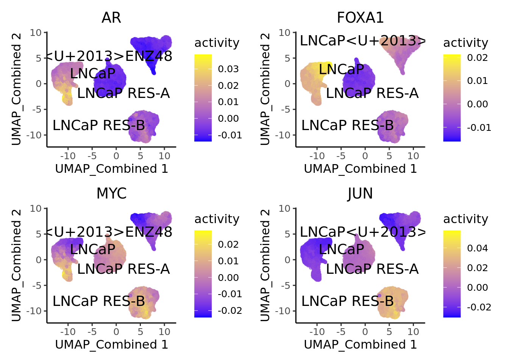
Visualize the newly discovered differential TFs by UMAP
plotActivityDim(sce = GeneExpressionMatrix,
activity_matrix = score.combine.wilcox,
tf = c("SPDEF","HES4","ATF5","NR2F2"),
dimtype = "UMAP_Combined",
label = "label",
point_size = 1,
ncol = 2,
nrow = 2)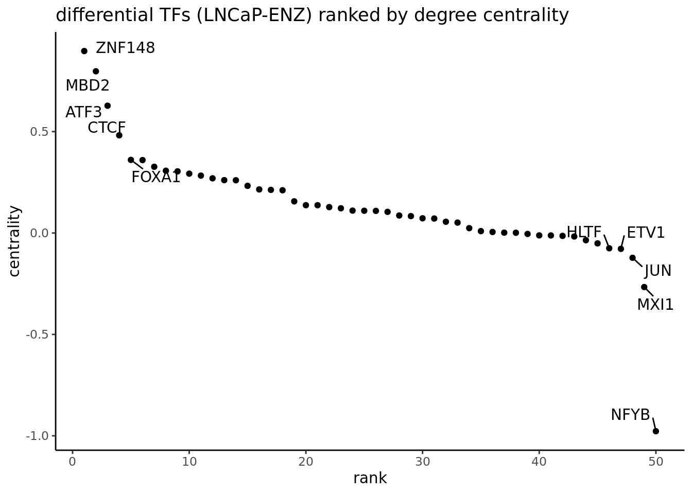
Visualize regulons by heatmap
rowData(GeneExpressionMatrix) <- NULL
plotHeatmapRegulon(sce=GeneExpressionMatrix,
tfs= c( "AR", "FOXA1", "MYC", "JUN"),
regulon=regulon.w.wilcox,
regulon_cutoff=0.1,
downsample=1000,
cell_attributes="label",
col_gap="label",
exprs_values="counts",
name="regulon heatmap",
column_title_rot = 45)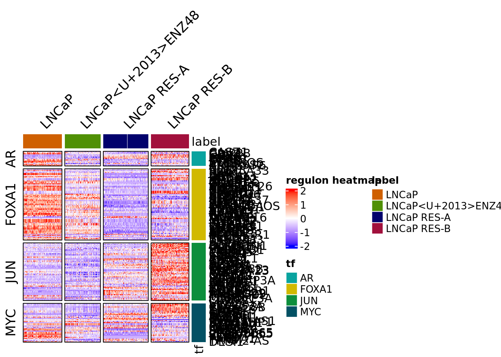
plotHeatmapActivity(activity=score.combine.wilcox,
sce=GeneExpressionMatrix,
tfs=rownames(score.combine.wilcox),
downsample=1000,
cell_attributes="label",
col_gap="label",
name = "transcription factor activity",
column_title_rot = 45)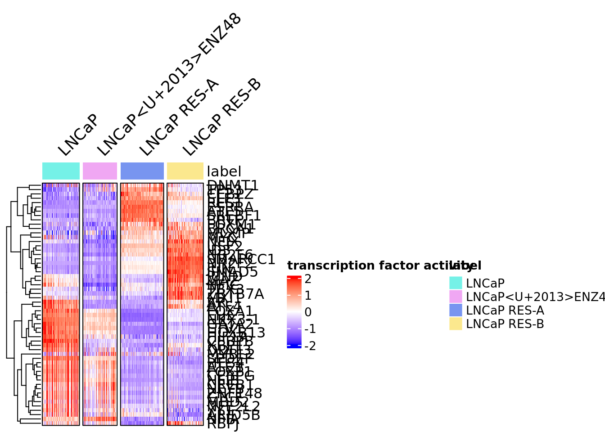 ## Geneset enrichment Sometimes we are interested to know what pathways are enriched in the regulon of a particular TF. We can perform geneset enrichment using the enricher function from clusterProfiler.
#retrieve genesets
H <- EnrichmentBrowser::getGenesets(org = "hsa",
db = "msigdb",
cat = "H",
gene.id.type = "SYMBOL",
cache = FALSE)
C6 <- EnrichmentBrowser::getGenesets(org = "hsa",
db = "msigdb",
cat = "C6",
gene.id.type = "SYMBOL",
cache = FALSE)
#combine genesets and convert genesets to be compatible with enricher
gs <- c(H,C6)
gs.list <- do.call(rbind,lapply(names(gs),
function(x) {data.frame(gs=x, genes=gs[[x]])}))
enrichresults <- regulonEnrich(TF = c("AR", "FOXA1", "MYC", "JUN"),
regulon = regulon.w.wilcox,
weight = "weight",
weight_cutoff = 0,
genesets = gs.list)## AR## FOXA1## MYC## JUN#plot results
enrichPlot(results = enrichresults, ncol = 2)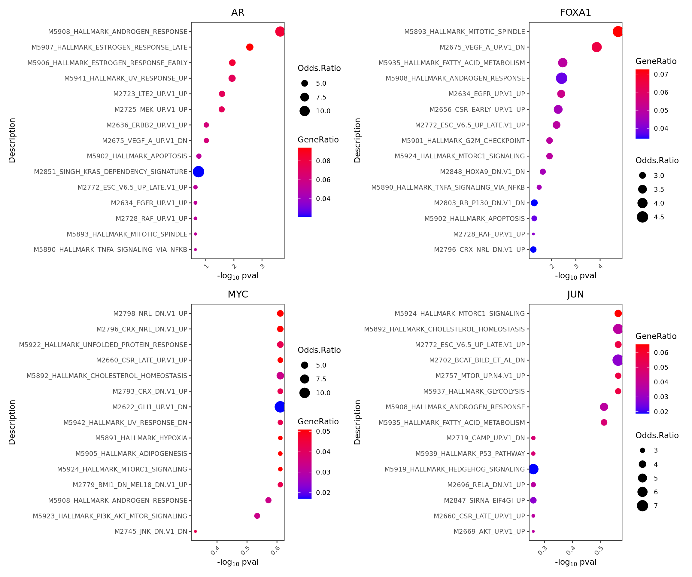
We can visualize the genesets of known factors as a network
plotGseaNetwork(tf = names(enrichresults),
enrichresults = enrichresults,
p.adj_cutoff = 0.1,
ntop_pathways = 10)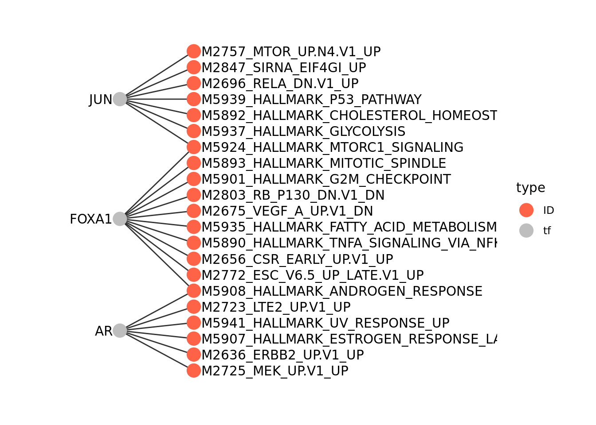 We can visualize the genesets of differential factors as a network
enrichresults <- regulonEnrich(TF = markers.sig$tf,
regulon = regulon.w.wilcox,
weight = "weight",
weight_cutoff = 0,
genesets = gs.list)## HES4## SPDEF## NKX3-1## FOXP1## NFIB## HES4## SPDEF## NFYB## NFIB## CREB1## ATF5## BPTF## SREBF1## JUN## REST## JUN## NR2F2## SMARCC1## NR2F6## ATF5plotGseaNetwork(tf = names(enrichresults),
enrichresults = enrichresults,
p.adj_cutoff = 0.1,
ntop_pathways = 10)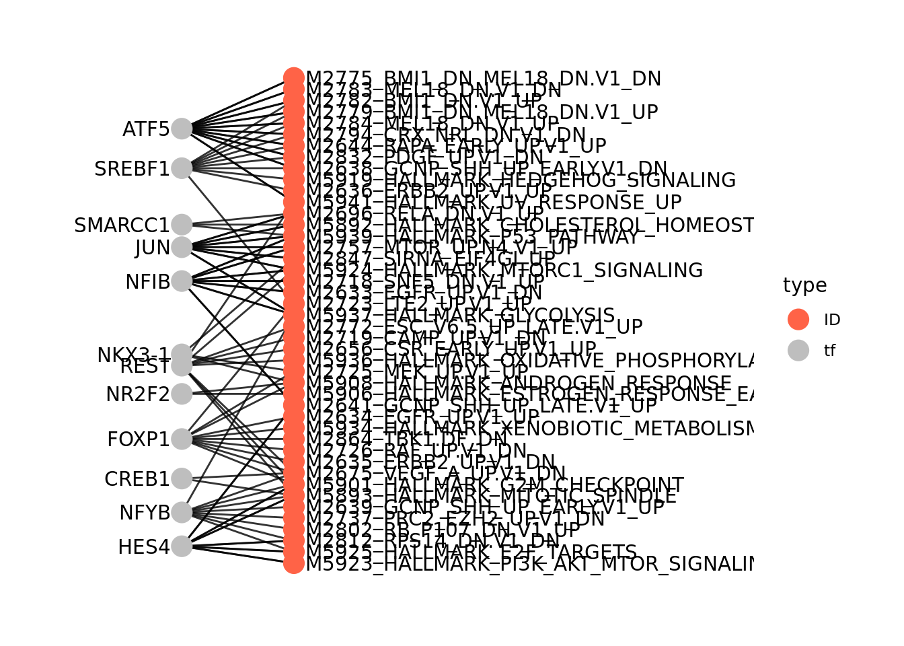
4.14 Differential network analysis
In addition to looking at the summed TF activity, a second approach to investigate differential TF activity is to compare and contrast target genes or network topology. In this example, we know that AR is downregulated in the Enzalutamide treated cells compared to parental LNCaP.
plotDiffNetwork(regulon.w.wilcox,
cutoff = 0,
tf = c("AR"),
weight = "weight",
clusters = c("LNCaP","LNCaP–ENZ48"),
layout = "stress")## Building graph using weight as edge weights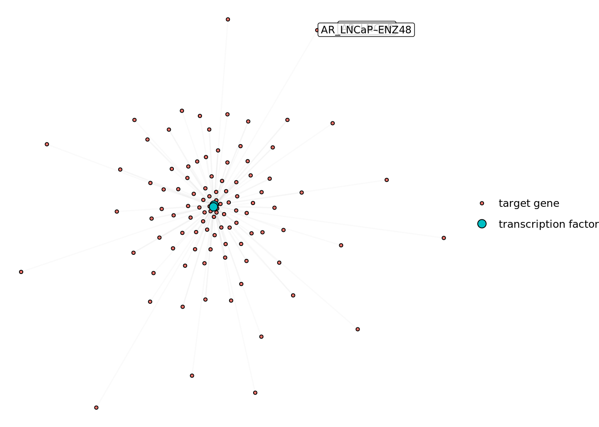 We perform edge subtracted graph between two conditions and rank TFs by degree centrality. In this example, positive centrality indicates higher activity in parental LNCaP and negative centrality indicates higher activity in Enzalutamide treated cells.
# construct a graph of the parental and enzalutamide treated cells respectively
LNCaP_network <- buildGraph(regulon.w.wilcox, weights = "weight", cluster="LNCaP")## Building graph using weight as edge weightsENZ_network <- buildGraph(regulon.w.wilcox, weights = "weight", cluster="LNCaP–ENZ48")## Building graph using weight as edge weights# construct a difference graph
diff_graph <- buildDiffGraph(LNCaP_network, ENZ_network, abs_diff = FALSE)
diff_graph <- addCentrality(diff_graph)
diff_graph <- normalizeCentrality(diff_graph)
rank_table <- rankTfs(diff_graph)
library(ggplot2)
ggplot(rank_table, aes(x = rank, y = centrality)) +
geom_point() +
ggrepel::geom_text_repel(data = rbind(head(rank_table,5),
tail(rank_table,5)),
aes(label = tf),
nudge_x = 0, nudge_y = 0, box.padding = 0.5) +
theme_classic() + ggtitle ("differential TFs (LNCaP-ENZ) ranked by degree centrality")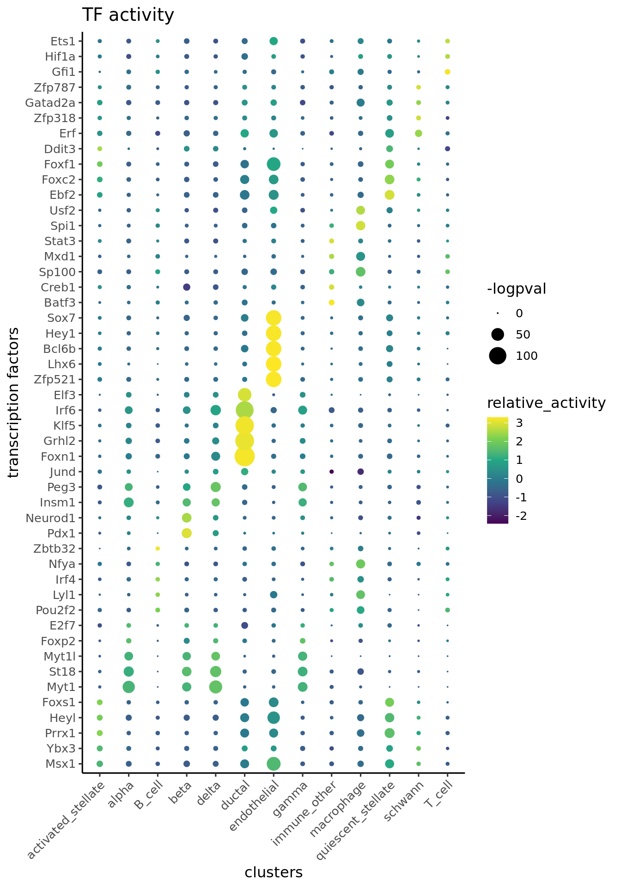
Sometimes, we are interested to identify interaction partners of the TFs of interest. This can be achieved by comparing the overlap of the targets genes for all the TFs and identify the most similar TFs by Jaccard similarity. To illustrate this function, we take a look at the top most similar 20 TFs to AR.
library(igraph)
diff_graph_filter <- subgraph.edges(diff_graph,
E(diff_graph)[E(diff_graph)$weight>0],
del=TRUE)
# compute a similarity matrix of all TFs
similarity_score <- calculateJaccardSimilarity(diff_graph_filter)
# Focus on AR
similarity_score_AR <- similarity_score[, "AR"]
similarity_df <- data.frame(similarity = head(sort(similarity_score_AR,
decreasing = TRUE),20),
TF = names(head(sort(similarity_score_AR,
decreasing = TRUE),20)))
similarity_df$TF <- factor(similarity_df$TF,
levels = rev(unique(similarity_df$TF)))
# plot top TFs most similar to SPI1
topTFplot <- ggplot(similarity_df, aes(x=TF, y=similarity)) +
geom_bar(stat="identity") +
coord_flip() +
ggtitle("AR similarity") +
theme_classic()
print(topTFplot)In order to convince ourselves that our differential network is statistically significant, we permute the edges and obtain a background graph from averaging many iterations. Here, we plot the differential network graph subtracted by permuted graphs.
# create a permuted graph by rewiring the edges 100 times
permute_matrix <- permuteGraph(diff_graph_filter, "AR", 100, p=1)
permute_matrix <- permute_matrix[names(similarity_score_AR),]
diff_matrix <- similarity_score_AR-rowMeans(permute_matrix)
diff_matrix_df <- data.frame(similarity = head(sort(diff_matrix,
decreasing = TRUE),20),
TF = names(head(sort(diff_matrix,
decreasing = TRUE),20)))
diff_matrix_df$TF <- factor(diff_matrix_df$TF, levels = rev(unique(diff_matrix_df$TF)))
# plot top TFs most similar to AR
topTFplot <- ggplot(diff_matrix_df, aes(x=TF, y=similarity)) +
geom_bar(stat="identity") +
coord_flip() +
ggtitle("background subtracted AR similarity ") +
theme_classic()
print(topTFplot)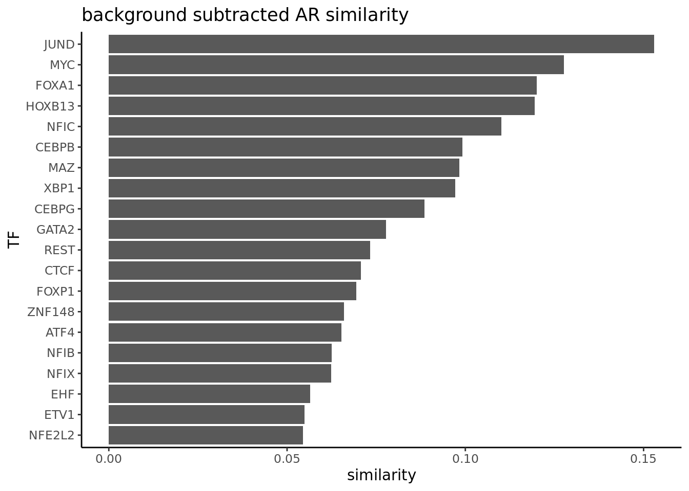
# obtain empirical p-values
p_matrix <- rowMeans(apply(permute_matrix, 2, function(x) {x > similarity_score_AR}))
p_matrix[names(head(sort(diff_matrix,decreasing = TRUE),20))]## JUND MYC FOXA1 HOXB13 NFIC CEBPB MAZ XBP1 CEBPG GATA2 REST
## 0.00 0.02 0.02 0.00 0.00 0.00 0.00 0.01 0.00 0.02 0.02
## CTCF FOXP1 ZNF148 ATF4 NFIB NFIX EHF ETV1 NFE2L2
## 0.02 0.02 0.00 0.01 0.00 0.02 0.01 0.00 0.01